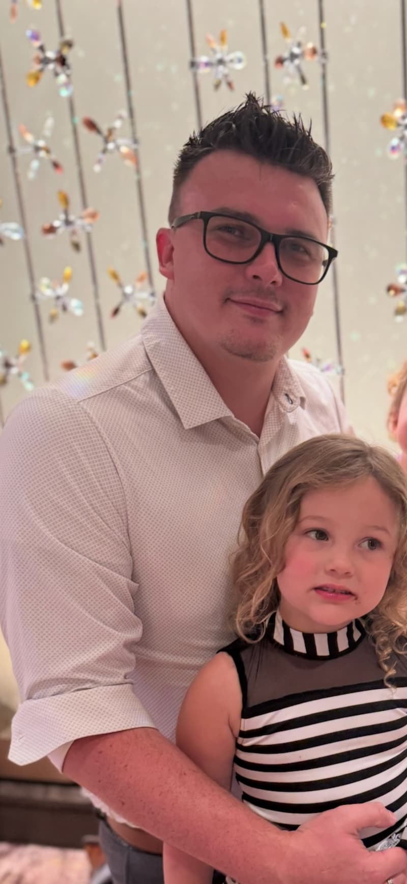

Dustin Letts | WDD 130

Dustin Letts is currently a territory manager for an insurance restoration company with over a decade of professional experience spanning construction operations, project management, and business ownership. Based in Colorado, he balances his full-time regional leadership responsibilities with pursuing an online school at BYU. Outside of his career and studies, he values time with his wife, Tawny with whom he has been married to for ten years, and his three young daughters. He also enjoys playing board games.